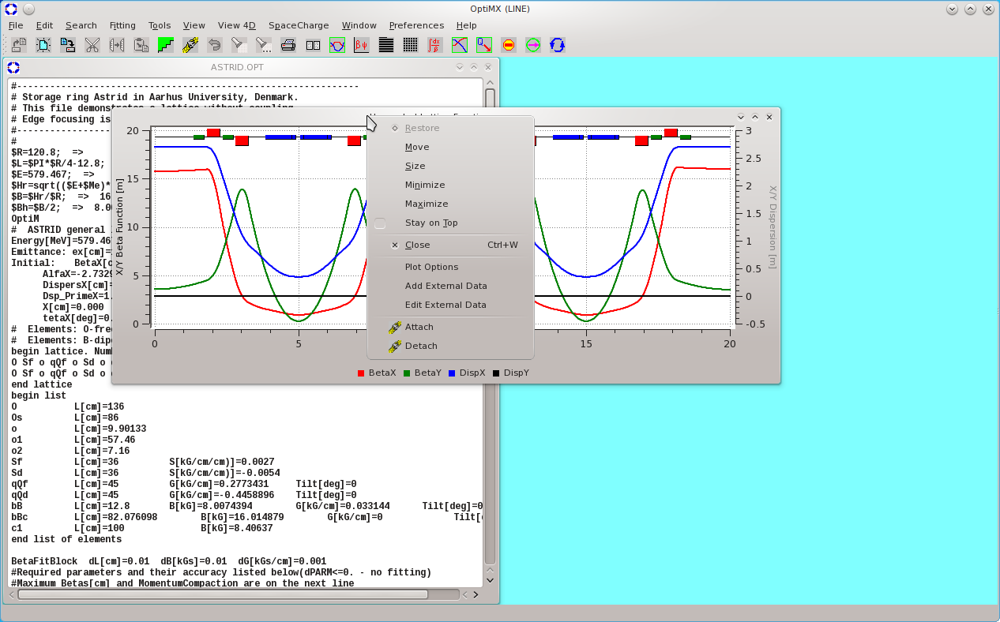
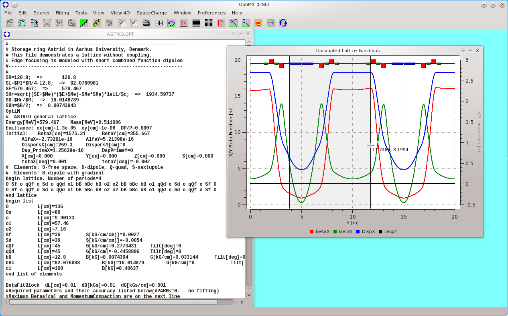
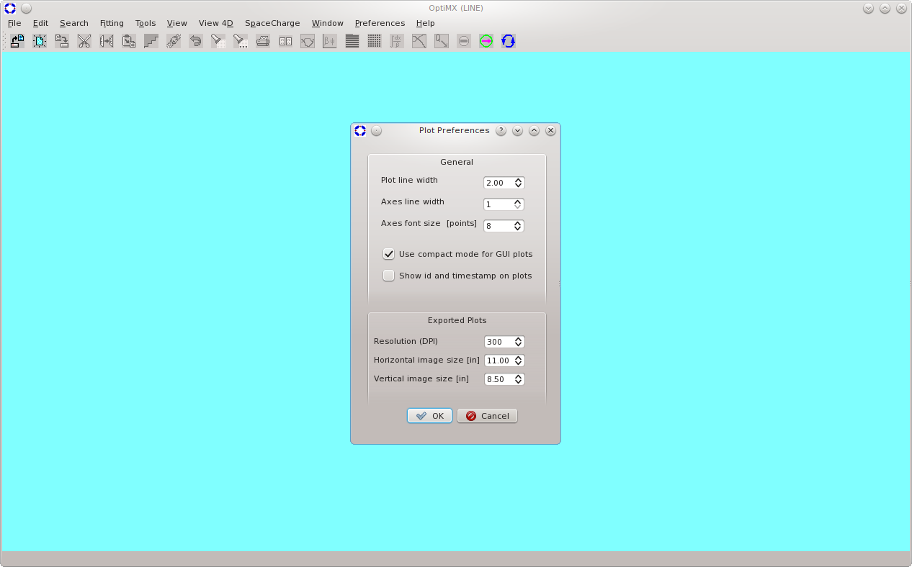
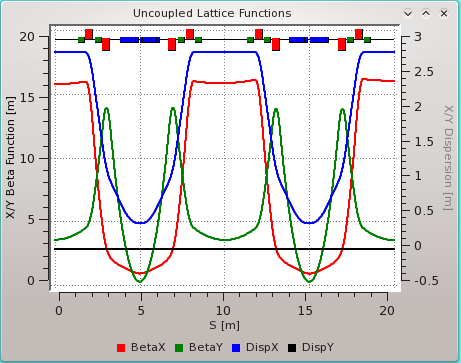
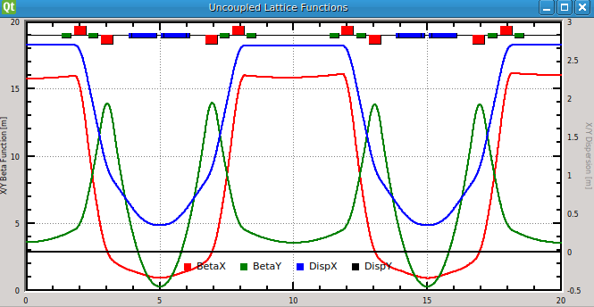

Alternatively, the plot option menu may be accessed by using the combination ctrl-right-click
anywhere on the plot canvas. To enter new limits, autoscale must be disabled.
Alternatively, the plot option menu may be accessed by using the combination ctrl-right-click
anywhere on the plot canvas. To enter new limits, autoscale must be disabled.
All graphical (plot) windows have similar functionality. Curves and corresponding legends are color-coded. Left-clicking the mouse on a curve legend icon at the bottom of the screen either displays or hides the corresponding curve. The horizontal axis (abcissa) is usually the coordinate (measured in meters) along the beam line. The beamline is displayed at the top or bottom of the plot using a "lego plot" where all elements are represented as rectangles, color-coded by type. Placing the mouse cursor directly over a rectangle displays the type, label and index of the corresponding element. Information about the next downstream element is also provided; this is useful to locate a very small or zero-length element e.g. a thin quad.
There are two vertical axes (ordinates), one on the left one and one the right.
In normal display mode, the axes are labeled and units are indicated. Some plots employ both vertical axes;
other use the left axis only. In the latter case the right axis will be hidden and/or unlabeled.
Axes limits are automatically set. They may be modified and set to fixed values from the global plot option menu,
which is accessible from the window "system" pop-up menu, as shown in the following screenshot.

Simply right-click on the graphical window top border
and select "plot options".
Alternatively, the plot option menu may be accessed by using the combination ctrl-right-click
anywhere on the plot canvas. To enter new limits, autoscale must be disabled.
From the window system menu, an option is provided to read and plot data from an external file so as to display it over a computed plot. This option is useful to compare calculated values to results of measurement. Note that each plot window holds a private copy of its data; this data is deleted when the window is closed. Plot data may be saved in many standard formats (e.g. pdf, png, jpeg etc ..) or simply as ascii text by invoking the Save As function from the File menu.
Each plot window holds a private copy of its data; this data is deleted when the window is closed. Plot data may be saved in many standard formats (e.g. pdf, png, jpeg etc ..) or simply as ascii text by invoking the Save As function from the File menu.
By default, the left hand axis is active and zoom is enabled on the horizontal axis only. A zoom region may be selected by right clicking on the mouse and dragging it.  Zoom may be enabled on each axis separately. To zoom in a rectangular region that is not constrained, zoom must be enabled on both the horizontal and one of the vertical axis. The specific vertical axis used for zooming and the vertical position reported by the cursor tracker is selected by making either one of the vertical axes "active". The active axis title is displayed in a dark font. The title of the inactive axis is grayed out.
To economize screen real-estate, plots may be displayed in compact mode. As shown below, compact mode may be selected from the top level menu by selecting Preferences | Plots. This mode may be made the default by saving the preferences.  Here is a comparison of how the same plot is displayed in normal mode and in compact mode. Note   Note that in compact mode, the horizontal axis title is omitted (it is usually the longitudinal position along the line in meters). The coordinates of any point can be obtained from the coordinates displayed by the tracker cursor. Note also that when a curve is associated with the right vertical axis, the right vertical axis must be the active one in order for the correct vertical coordinate to be displayed.